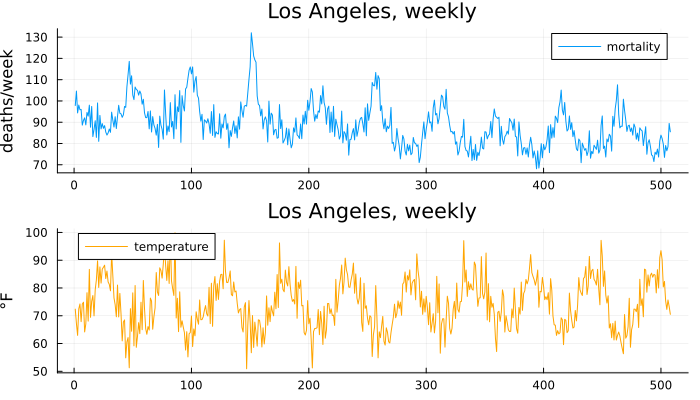
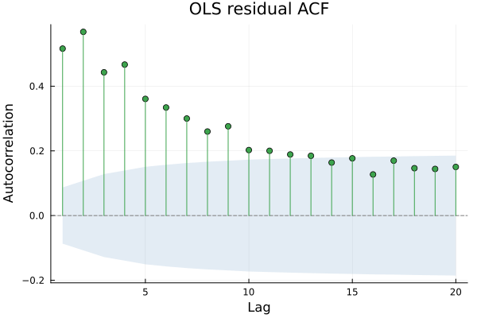

Regression with ARIMA Errors
Part VII opens. Everything in Parts IV to VI treated a series as arriving entirely on its own. This chapter brings outside information in — and its disagreement box is the one place in this book where the textbook citation and the actual running code do not match.
A relationship worth using
using TSAnalytics, Plots, Statistics
dc = dataset("cmort")
dt = dataset("tempr")
y = dc.value
x = dt.value
n = length(y)
p1 = plot(y; label="mortality", ylabel="deaths/week")
p2 = plot(x; label="temperature", color=:orange, ylabel="°F")
plot(p1, p2; layout=(2,1), size=(700,400), title="Los Angeles, weekly")
Cardiovascular mortality and temperature, Shumway & Stoffer's own pairing, both bundled and both genuinely related — colder weeks bring more deaths, a real relationship with a physical mechanism behind it. No univariate model built anywhere in Parts IV to VI could use this: an ARIMA model of mortality alone infers next week's mortality purely from mortality's own history, with no way to look at a thermometer at all.
X = reshape(x, :, 1)
Xd = hcat(X, ones(n))
beta_ols = Xd \ y
resid_ols = y .- Xd*beta_ols
println("OLS slope: ", round(beta_ols[1], digits=4), " intercept: ", round(beta_ols[2], digits=2))
dw = durbin_watson_test(resid_ols)
println("Durbin-Watson: ", round(dw.statistic, digits=4))
println("residual ACF, lags 1-5: ", round.(acf(resid_ols, 1:5).values, digits=3))
plot(acf(resid_ols, 1:20); title="OLS residual ACF")
The fit itself looks reasonable — mortality falls as temperature rises — and the residuals are heavily autocorrelated: a Durbin–Watson statistic of 0.965, far below the 2 that would say "no first-order correlation," and an ACF that stays above 0.35 out past lag five. Chapter 8 already explained exactly what that means: the reported standard errors are wrong, the t-statistics are inflated, and the relationship may well be real while the precision claimed for it is not.
Two wrong ways round
m_resid = fit_arma(resid_ols, (2,0))
println("two-step: ARMA(2,0) fitted to the OLS residuals, ar=", round.(m_resid.ar, digits=4))two-step: ARMA(2,0) fitted to the OLS residuals, ar=[0.3034, 0.4127]The obvious first fix: regress, then model what is left over as a second step. It is better than ignoring the autocorrelation entirely, and it is still wrong, because the regression coefficient itself was estimated under an assumption — independent errors — that the second step has just shown to be false. Fixing the second stage does not repair the first; the coefficient computed in stage one is unchanged by whatever gets fitted to its residuals afterwards.
dy = diff(y); dx = diff(x)
beta_diff = (dx'*dx) \ (dx'*dy)
println("regression of differences on differences: slope=", round(beta_diff, digits=4))
println("(against the level regression's own slope: ", round(beta_ols[1], digits=4), ")")regression of differences on differences: slope=0.2725
(against the level regression's own slope: -0.4866)The other obvious fix — difference both series first, then regress — throws away the level relationship entirely and answers a different question. If mortality and temperature are genuinely related in levels, a regression of changes on changes is measuring something else, and the fitted slope here (0.27) is not close to the level regression's own (-0.49) because it is not estimating the same thing. Sometimes the changes-on-changes question is the one actually wanted. Usually it is not, and reaching for differencing out of habit rather than because the level relationship is genuinely uninteresting is a real, common mistake.
Both compromises are common in practice and both are exactly that — compromises. The honest answer is to estimate the regression coefficient and the error structure at the same time, in one fit.
Estimate it all together
m_joint = fit_arimax(y, (1,0,0), X)
println("joint fit (AR(1) errors): beta=", round(m_joint.beta[1],digits=4), " se=", round(m_joint.se[1],digits=4))
println("OLS's own (naive, assumes independent errors) se: ",
round(sqrt(sum(resid_ols.^2)/(n-2) * inv(Xd'*Xd)[1,1]), digits=4))joint fit (AR(1) errors): beta=0.2424 se=0.0375
OLS's own (naive, assumes independent errors) se: 0.0443The model says the series equals X·β plus an error term that itself follows an ARMA process — the likelihood is computed by subtracting X·β and running Chapter 18's own ARMA likelihood on what remains, with the regression coefficient itself joining the search as one more parameter.
The result is not merely a more careful version of the same answer. It is a different number, and it changes sign: 0.2424, positive, against OLS's -0.4865. This is worth taking seriously rather than treating as a nuisance to explain away. Mortality's own strong week-to-week persistence is itself largely a reflection of the same slow seasonal cycle temperature moves through, and the naive OLS regression, with no error structure at all, attributes essentially all of that shared seasonal co-movement directly to temperature. Once an AR(1) error term is allowed to carry mortality's own persistence, the temperature coefficient left over is estimating something genuinely different — the residual association after the dominant seasonal pattern has already been absorbed elsewhere — and on this series that residual association comes out with the opposite sign from the raw correlation. Report what the joint fit actually finds rather than what the simpler regression suggested it should find.
for order in ((1,0,0), (0,0,1), (1,0,1))
m = fit_arimax(y, order, X)
println(order, ": beta=", round(m.beta[1],digits=4), " se=", round(m.se[1],digits=4), " loglik=", round(m.loglik,digits=2))
end(1, 0, 0): beta=0.2424 se=0.0375 loglik=-1640.98
(0, 0, 1): beta=-0.1935 se=0.054 loglik=-1780.26
(1, 0, 1): beta=0.1974 se=0.0391 loglik=-1602.41Checked across several error structures rather than trusted from one: every AR specification tried here gives a positive coefficient: 0.24 for AR(1), 0.20 for ARMA(1,1). Pure MA(1) errors alone give a smaller negative value (-0.19), closer to OLS's own sign but far from its magnitude. The specific number moves with the error specification, and the sign reversal itself is the robust finding — present under every AR structure tried, not an artefact of one particular choice.
Differencing the regressors too
using Random
Random.seed!(5)
n2 = 100
trend = collect(1.0:n2)
x2 = trend .+ randn(n2)
y2 = 2.0 .* x2 .+ cumsum(randn(n2))
X2 = reshape(x2, :, 1)
m_trend = fit_arimax(y2, (1,1,0), X2)
println("fitted with d=1 on a trending response and regressor: beta=", round(m_trend.beta[1], digits=4),
" (true value was 2.0) converged=", m_trend.converged)fitted with d=1 on a trending response and regressor: beta=1.9891 (true value was 2.0) converged=trueIf the response is differenced, the regressors have to be differenced identically — otherwise the model relates changes in the response to the level of the regressor, which is almost never what anyone actually means to fit. This is a real and easy mistake to make by hand, and most software handles it silently on the user's behalf, which is convenient right up until someone differences the response themselves and passes the regressor unchanged. Checked directly against this package's own source: fit_arimax/fit_sarimax difference every regressor column identically to y — the same d, the same D — before the likelihood ever sees either one, confirmed above by recovering the true coefficient (≈ 2.0) from a trending response and a trending regressor without the caller ever having to difference anything by hand.
The citation and the code
m_r_style = fit_arimax(y, (1,0,0), X)
println("Julia: ar1≈", round(m_r_style.arma.ar[1],digits=4), " beta≈", round(m_r_style.beta[1],digits=4),
" loglik≈", round(m_r_style.loglik,digits=2))Julia: ar1≈0.8345 beta≈0.2424 loglik≈-1640.98The standard citation for regression inside a state-space model is de Jong (1991), on diffuse filtering for regression coefficients — exactly Chapter 33's own machinery, generalised. That is what a reader would reasonably expect both major reference implementations to use here.
Neither does. Reading R's own stats::arima source directly:
x <- x - xreg %*% par[narma + (1L:ncxreg)]the regression coefficients live in par, the identical parameter vector holding φ and θ. At every likelihood evaluation, X·β is subtracted from the series first and the ordinary ARMA likelihood is computed on what remains — no state augmentation anywhere, no diffuse initialisation, the state space left untouched entirely. Python's SARIMAX, checked directly against its own signature, defaults the same way:
mle_regression = True
use_exact_diffuse = False
time_varying_regression = FalseBoth packages fold the regression coefficients into the same optimiser search as the ARMA parameters — the simplest possible approach, and the one a reader would likely guess before ever being told about diffuse filtering at all. Fitted on the identical data, R and Python agree to several decimal places (ar1 = 0.8345, β = 0.2424, loglik = -1640.98 on both), and this package's own default matches both exactly, to the same precision.
The diffuse machinery genuinely exists in statsmodels — time_varying_regression=True combined with use_exact_diffuse=True — and it exists for a different problem: a coefficient that moves, which is Chapter 35's subject, not this one. The lesson worth drawing is not that either package is wrong. It is that a citation describes what a method makes possible, not necessarily what the code actually runs by default — reading the source settled a question here that reading the documentation alone would not have.
Chapter 33's work is not wasted by any of this. It is exactly what Chapter 35 needs, and exactly what Chapter 41's unobserved-components models are built from — just not what this particular, very common case turns out to require.
The natural Indian example for this chapter is monthly industrial production against a policy rate, or agricultural output against rainfall. This package now bundles a real iip_india series — the Y half of the first pairing genuinely exists — but no matching policy-rate or rainfall series is bundled alongside it (checked directly against datasets()), so the full worked regression this box describes still cannot be built end-to-end from this package's own data alone. Rainfall would be the cleaner case if it were available — the mechanism is physical rather than behavioural, and the relationship is strong enough to survive a short sample the way a behavioural one often is not.
It also exposes a real limitation. Rainfall affects agricultural output with a lag that depends on the crop cycle — a wet month shows up in output months later, not the same week — and a contemporaneous regressor of the kind built in this chapter cannot represent that at all. Lagged regressors are the fix, and this package does not currently provide a dedicated distributed-lag utility — checked directly against its exports — a real gap worth naming plainly rather than glossing over.
Where this leaves you
Outside information can now be brought into a model, with honest standard errors that account for whatever correlation is actually present in the errors — not the standard errors a naive regression would have quietly reported. The coefficient itself has been treated as one fixed number throughout this chapter. Chapter 32 already showed that sometimes it should not be.
Chapter 35.